18 700 ₽в лизинг от 600 ₽/мес

75 390 ₽в лизинг от 2 500 ₽/мес
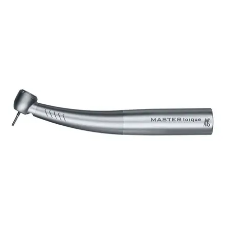
69 970 ₽в лизинг от 2 300 ₽/мес
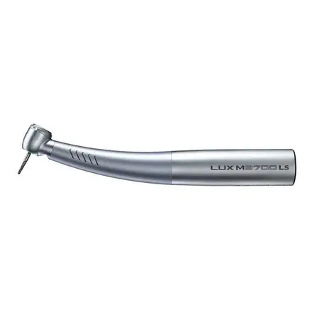
69 970 ₽в лизинг от 2 300 ₽/мес
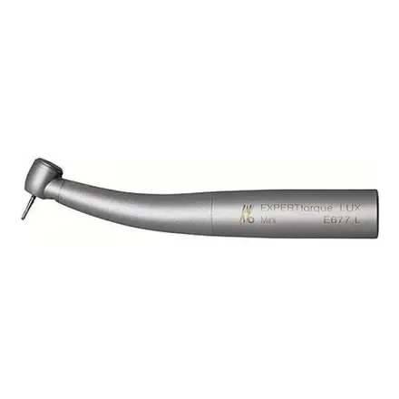
55 220 ₽в лизинг от 1 800 ₽/мес
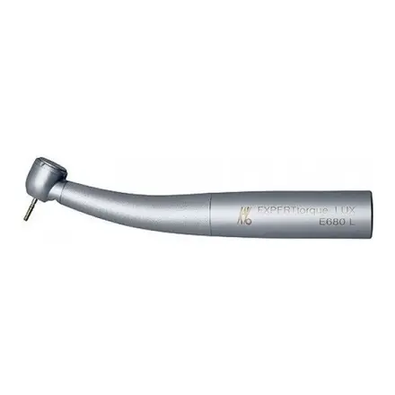
51 200 ₽в лизинг от 1 700 ₽/мес
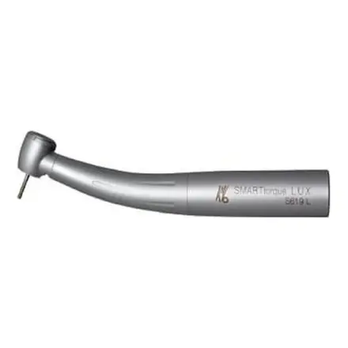
34 980 ₽в лизинг от 1 100 ₽/мес
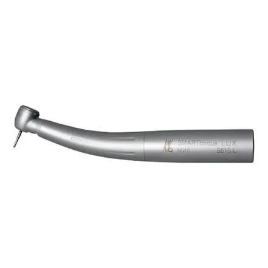
34 890 ₽в лизинг от 1 100 ₽/мес
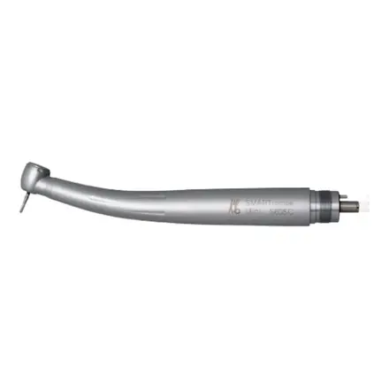
26 920 ₽в лизинг от 900 ₽/мес
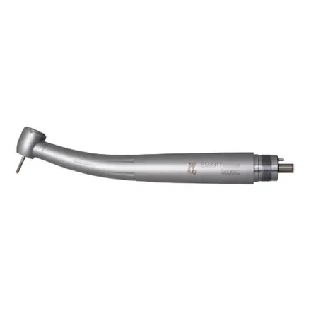
24 860 ₽в лизинг от 800 ₽/мес
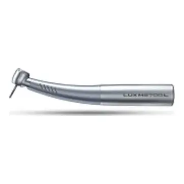
71 800 ₽в лизинг от 2 300 ₽/мес
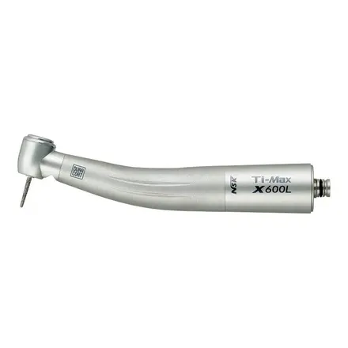
45 500 ₽в лизинг от 1 500 ₽/мес
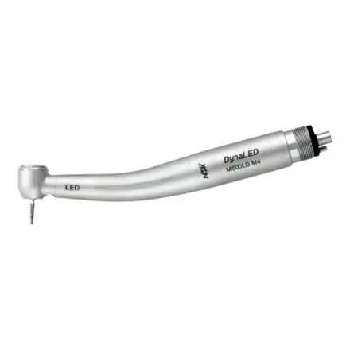
31 525 ₽в лизинг от 1 000 ₽/мес
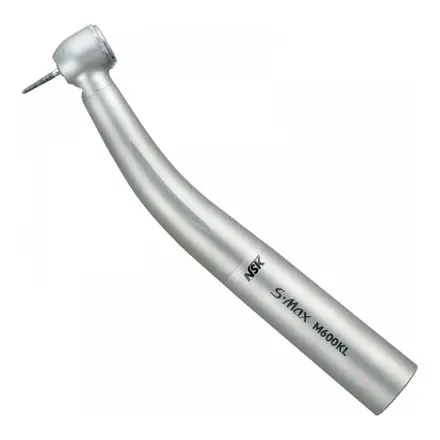
29 900 ₽в лизинг от 1 000 ₽/мес
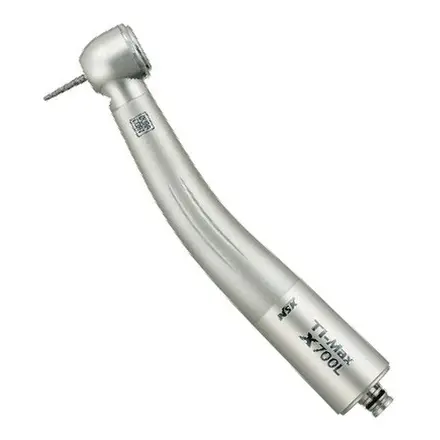
40 090 ₽в лизинг от 1 300 ₽/мес
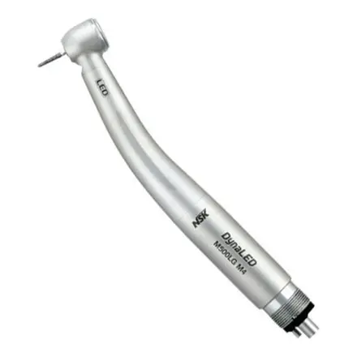
34 800 ₽в лизинг от 1 100 ₽/мес
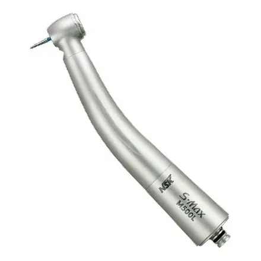
28 200 ₽в лизинг от 900 ₽/мес
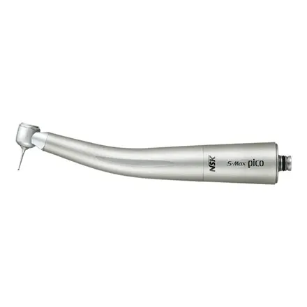
27 100 ₽в лизинг от 900 ₽/мес
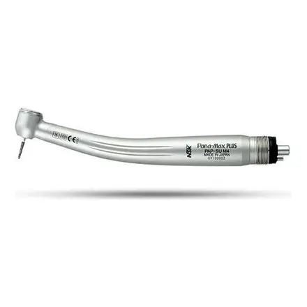
15 800 ₽в лизинг от 500 ₽/мес
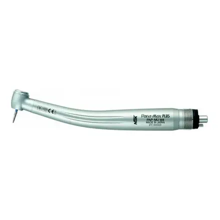
15 200 ₽в лизинг от 500 ₽/мес
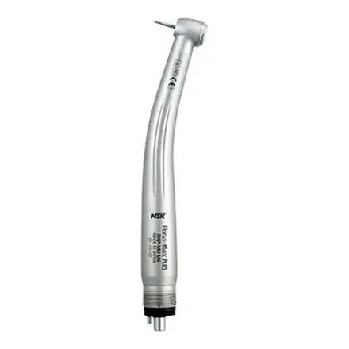
15 170 ₽в лизинг от 500 ₽/мес
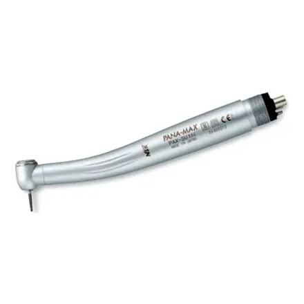
14 800 ₽в лизинг от 500 ₽/мес
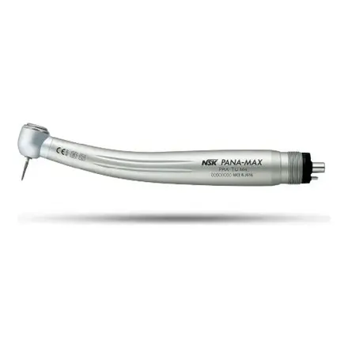
11 252 ₽в лизинг от 400 ₽/мес
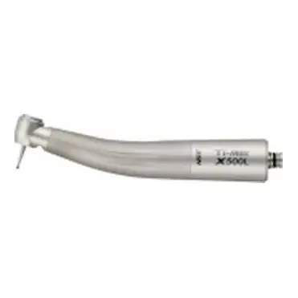
31 652 ₽в лизинг от 1 000 ₽/мес

28 500 ₽в лизинг от 900 ₽/мес

5 800 ₽в лизинг от 200 ₽/мес

37 200 ₽в лизинг от 1 200 ₽/мес
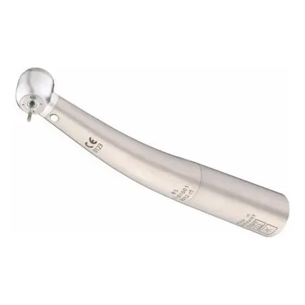
35 200 ₽в лизинг от 1 100 ₽/мес
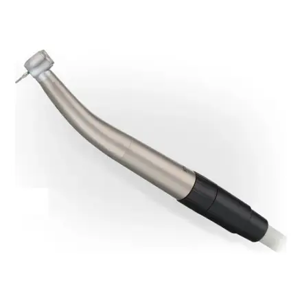
14 200 ₽в лизинг от 500 ₽/мес
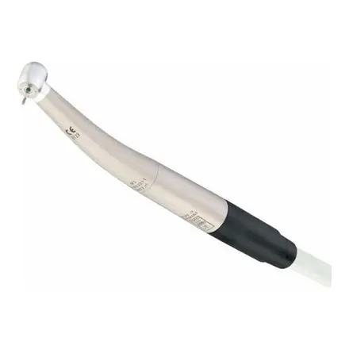
14 200 ₽в лизинг от 500 ₽/мес
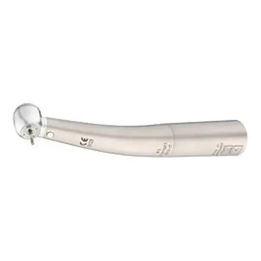
31 800 ₽в лизинг от 1 000 ₽/мес
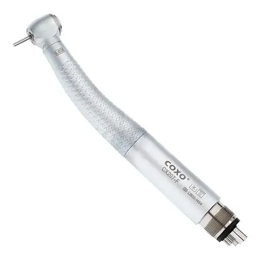
10 000 ₽в лизинг от 300 ₽/мес
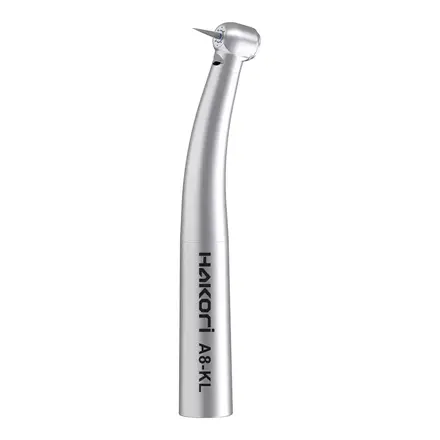
18 700 ₽в лизинг от 600 ₽/мес
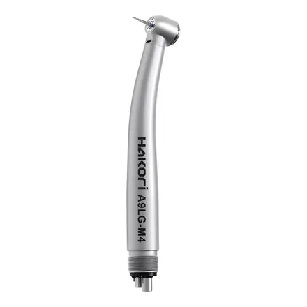
10 700 ₽в лизинг от 300 ₽/мес
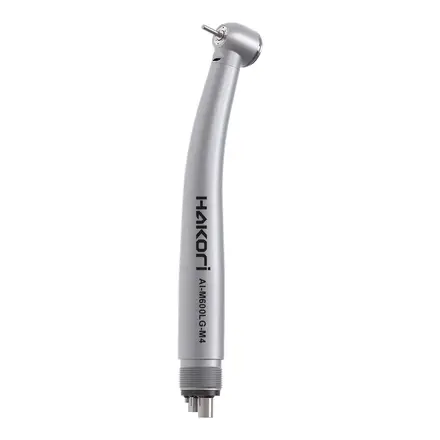
9 200 ₽в лизинг от 300 ₽/мес
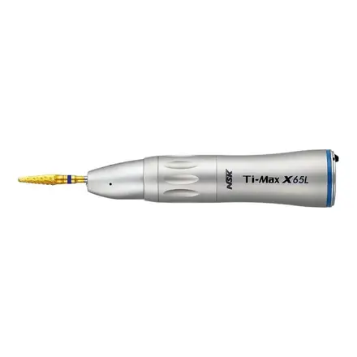
60 280 ₽в лизинг от 2 000 ₽/мес
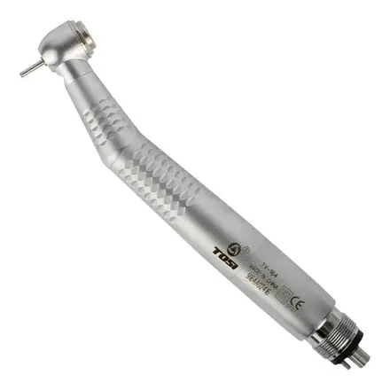
6 500 ₽в лизинг от 200 ₽/мес
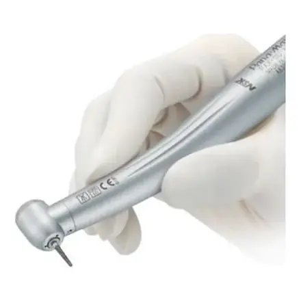
12 350 ₽в лизинг от 400 ₽/мес
Не знаете, что выбрать?Расскажите о кабинете и бюджете: подберём модели, сравним и пришлём КП с лизингом.
Под эти условия моделей нет. Снимите часть отметок или .
 Стерилизация и дезинфекция117 моделей
Стерилизация и дезинфекция117 моделей Стоматологические установки83 модели
Стоматологические установки83 модели Эндодонтия52 модели
Эндодонтия52 модели Хирургия и имплантология18 моделей
Хирургия и имплантология18 моделей